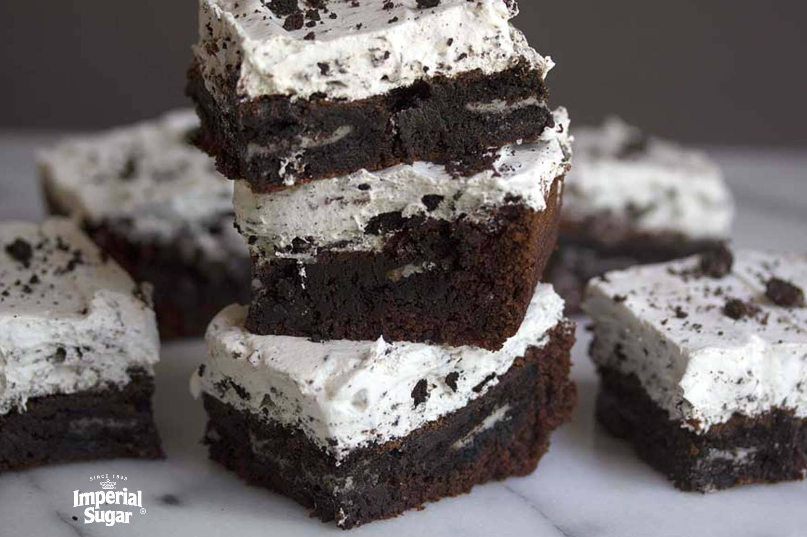

Cookies and Cream Brownies BAYBEE!

Like the title says crunchy cookies and cream but on a brownie
Ingredients
- ½ cups white sugar
- ¾ cup all-purpose flour
- ½ cup high-quality unsweetened cocoa powder
- ½ teaspoon salt
- ¼ teaspoon baking powder
- ¾ cup unsalted butter, melted
- 3 large eggs
- 1 teaspoon vanilla extract
- 32 chocolate sandwich cookies (such as Oreo®), divided
- 1 (8 ounce) container frozen whipped topping (such as Cool Whip®), thawed
Steps
- Preheat oven to 350 degrees F (175 degrees C).
- Grease 9-inch square baking pan.
- Mix sugar, flour, cocoa powder, salt, and baking poweder together in mixing bowl.
- Whisk butter, eggs, and vanilla together in a separate bowl. Add butter mixture to the flour mixture and mix until well combined.
- Pour 1/2 of the batter into the prepared baking pan and smooth out with a spatula. Add 16 OREO® cookies in an even layer (4 rows of 4 cookies), then spread the remaining 1/2 of the batter over top.
- Bake in the preheated oven until edges are brown and center is set, 30 to 35 minutes.
- Remove pan from the oven and set on a wire rack. Let brownies cool completely, at least 30 minutes.
- Crush 12 of the remaining OREO® cookies. Place the whipped topping in a bowl and fold in the crushed cookies. Spread over the top of the brownies. Crush the remaining 4 cookies, then sprinkle over the top of the whipped cream mixture.
- Keep refrigerated until you are ready to slice and serve.